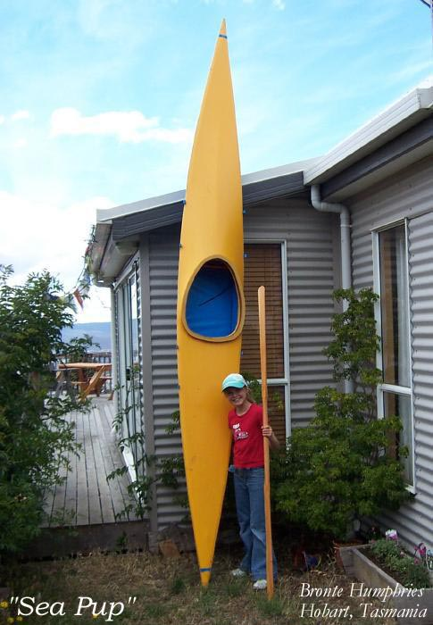

| Kayak Designs - Introduction | Menu Previous Page Next Page |
|  |
The kayaks in this manual are designed for good performance, ease of construction, and low cost. All designs, all plans, and all instructions in this manual are "free". Unlke most commercial folding kayaks, these boats are narrow, shallow, and light weight. Many of the designs are based on traditional Inuit (Greenland) and Aleut ( Baidarka) kayaks. The boats fall into four general categories.
1. Performance - Sea Rover, Sea Ranger, Sea Rider, Sea Raider, 2. Touring - Sea Cruiser, Sea Tour 13,15,17, Sea Otter, Nikumi, Yarra 3. Children / Small Paddler - Sea Flea, Sea Pup, Sea Otter
4. Inflatables - Sonnet 16 and Sonnet 18
Folder Construction is of aluminum stringers, HDPE (plastic) cross sections, and a lightweight PVC skin. Construction time is approximately 100 hrs. with costs averaging $500.00US. Kayak assembly times are under 30 minutes. Use the {Back} key to return. Folder construction is a simplified version of the Feathercraft technique.
Wood frame (non-folder) construction is approximately 65 hrs. with costs averaging $200.00. Any design, except inflatables, in the manual that can be constructed as a folding kayak can also be constructed as a wood frame non-folder. Use the {Back} key to return. Wood frame construction is based in part on the techniques of George Dyson.
Inflatable / folder hybrid construction ( 4 sponsons / 3 aluminum stringers) is approximately 50hrs. with costs averaging $250.00. Assembly times average 10 minutes. Use the {Back} key to return. Detailed folder Instructions are found in the "Frame Construction" and "PVC Skinning" sections of the Main Menu. Several hundred photos are included to assist in the construction process. Construction pics, drawings, offsets, and descriptions of the various designs are found in the Design Menu. The Contacts pages of the Main Menu provide Links to material sources for North American builders. The "New Completions" section of the Main Menu displays the latest homebuilder completions from around the world. All designs in this manual, except inflatables, can be constructed in woodstrip/fiberglass or stitch & glue (S&G) versions, though instructions are not provided for these hardshell versions. Spanish Language Version - Rodolfo Maurette from Argentina has translated the "Folding Kayak Builders Manual" into Spanish. Select "Spanish" Main Menu (Menú principal en español) from the Main Menu to access this version. To return to the English version, select Menú principal en Inglés ("English" Main Menu). Material sources from Spanish speaking countries will be included as they become available. |